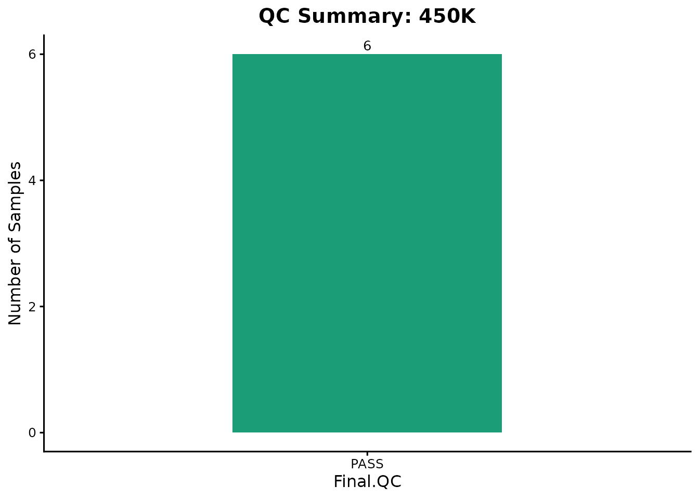
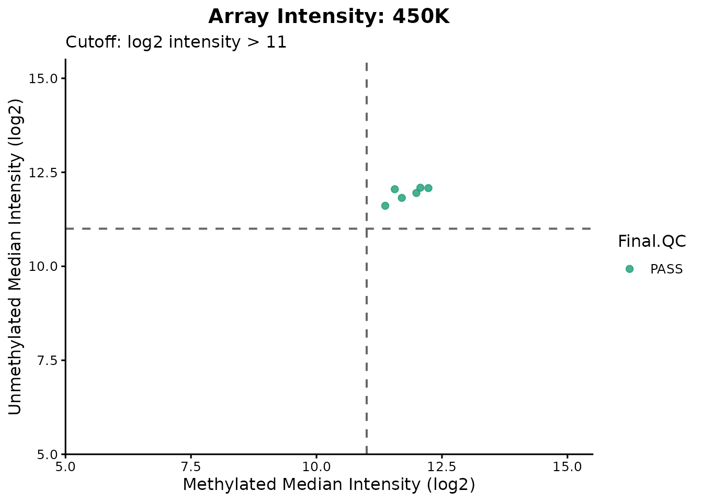
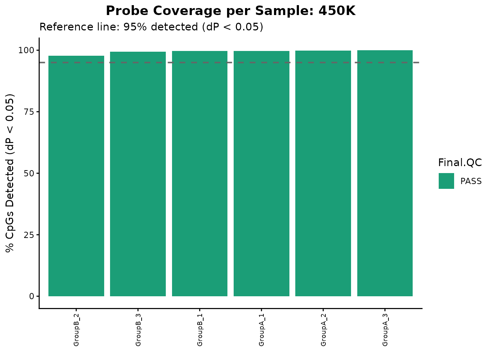

ImprintomeSet Workflow Quickstart
imprintomeR Team
Source:vignettes/imprintomeset-quickstart.Rmd
imprintomeset-quickstart.RmdOverview
This vignette presents a Bioconductor-style, object-first workflow using imprintomeR’s preprocessing-first architecture:
- MethQcSet: Quality control for single-platform raw data
- ImprintomeSet: Analysis container for imprinting studies
You will learn how to:
- create a
MethQcSetfor preprocessing - run platform-specific QC
- convert to
ImprintomeSetfor analysis - compute imprinting metrics with
runImprintome() - summarize, visualize, and export results
Core definitions used by imprintomeR:
- IDS:
sqrt((paternal_median - 0.5)^2 + (maternal_median - 0.5)^2) - Angle: derived from paternal/maternal deviations around
0.5 - IDI:
(beta - 0.5) * 2
Package Startup
library(imprintomeR)
#>
#> Attaching package: 'imprintomeR'
#> The following object is masked from 'package:base':
#>
#> beta1. QC Preprocessing (Optional if Data Already Cleaned)
If you have raw IDAT files: runMethQC()
needs a sample sheet with Sample_Name and
Basename (the IDAT path prefix, without
_Grn.idat/_Red.idat);
Sample_Group is recommended. This section runs on the six
Illumina 450K IDATs of the Bioconductor package minfiData, as in the
README Quick start (install it with
BiocManager::install("minfiData"); the chunks run only when
it is installed).
# minfiData's Illumina sample sheet; read.metharray.sheet() adds Basename
meta <- minfi::read.metharray.sheet(system.file("extdata", package = "minfiData"))
#> [read.metharray.sheet] Found the following CSV files:
#> [1] "/home/runner/work/_temp/Library/minfiData/extdata/SampleSheet.csv"
meta[, c("Sample_Name", "Sample_Group", "Basename")]
#> Sample_Name Sample_Group
#> 1 GroupA_3 GroupA
#> 2 GroupA_2 GroupA
#> 3 GroupB_3 GroupB
#> 4 GroupB_1 GroupB
#> 5 GroupA_1 GroupA
#> 6 GroupB_2 GroupB
#> Basename
#> 1 /home/runner/work/_temp/Library/minfiData/extdata/5723646052/5723646052_R02C02
#> 2 /home/runner/work/_temp/Library/minfiData/extdata/5723646052/5723646052_R04C01
#> 3 /home/runner/work/_temp/Library/minfiData/extdata/5723646052/5723646052_R05C02
#> 4 /home/runner/work/_temp/Library/minfiData/extdata/5723646053/5723646053_R04C02
#> 5 /home/runner/work/_temp/Library/minfiData/extdata/5723646053/5723646053_R05C02
#> 6 /home/runner/work/_temp/Library/minfiData/extdata/5723646053/5723646053_R06C02For your own data, read a tab-delimited sheet with the same columns instead:
meta <- LoadMeta("meta.tsv")If the platform is unknown or mixed, detect it first and run QC one platform at a time:
# Reads one IDAT per sample, infers the platform from the probe count and
# appends Platform, Array_Size, Manifest and Status columns
meta <- check_platform(meta)
#> Detecting platform for 6 samples...
#> Platform summary:
#> 450K: 6 sample(s)
table(meta$Platform)
#>
#> 450K
#> 6
# With several platforms, subset first, for example:
meta_epic <- meta[meta$Platform == "EPIC", ]
qcset_epic <- runMethQC(meta_epic) # platform taken from meta$PlatformIf the platform is already known, pass it directly.
runMethQC() loads the IDAT files, extracts beta values and
detection p-values, and runs QC:
qcset <- runMethQC(meta, platform = "450K", save_qc_report = FALSE)
#> Loading IDAT files for 6 samples (platform: 450K)...
#> Preprocessing and extracting beta values (normalization: noob)...
#> Loading required package: IlluminaHumanMethylation450kmanifest
#> Loading required package: minfi
#> Loading required package: BiocGenerics
#> Loading required package: generics
#>
#> Attaching package: 'generics'
#> The following objects are masked from 'package:base':
#>
#> as.difftime, as.factor, as.ordered, intersect, is.element, setdiff,
#> setequal, union
#>
#> Attaching package: 'BiocGenerics'
#> The following objects are masked from 'package:stats':
#>
#> IQR, mad, sd, var, xtabs
#> The following objects are masked from 'package:base':
#>
#> anyDuplicated, aperm, append, as.data.frame, basename, cbind,
#> colnames, dirname, do.call, duplicated, eval, evalq, Filter, Find,
#> get, grep, grepl, is.unsorted, lapply, Map, mapply, match, mget,
#> order, paste, pmax, pmax.int, pmin, pmin.int, Position, rank,
#> rbind, Reduce, rownames, sapply, saveRDS, table, tapply, unique,
#> unsplit, which.max, which.min
#> Loading required package: GenomicRanges
#> Loading required package: stats4
#> Loading required package: S4Vectors
#>
#> Attaching package: 'S4Vectors'
#> The following object is masked from 'package:utils':
#>
#> findMatches
#> The following objects are masked from 'package:base':
#>
#> expand.grid, I, unname
#> Loading required package: IRanges
#> Loading required package: Seqinfo
#>
#> Attaching package: 'Seqinfo'
#> The following objects are masked from 'package:imprintomeR':
#>
#> genome, genome<-
#> Loading required package: SummarizedExperiment
#> Loading required package: MatrixGenerics
#> Loading required package: matrixStats
#>
#> Attaching package: 'MatrixGenerics'
#> The following objects are masked from 'package:matrixStats':
#>
#> colAlls, colAnyNAs, colAnys, colAvgsPerRowSet, colCollapse,
#> colCounts, colCummaxs, colCummins, colCumprods, colCumsums,
#> colDiffs, colIQRDiffs, colIQRs, colLogSumExps, colMadDiffs,
#> colMads, colMaxs, colMeans2, colMedians, colMins, colOrderStats,
#> colProds, colQuantiles, colRanges, colRanks, colSdDiffs, colSds,
#> colSums2, colTabulates, colVarDiffs, colVars, colWeightedMads,
#> colWeightedMeans, colWeightedMedians, colWeightedSds,
#> colWeightedVars, rowAlls, rowAnyNAs, rowAnys, rowAvgsPerColSet,
#> rowCollapse, rowCounts, rowCummaxs, rowCummins, rowCumprods,
#> rowCumsums, rowDiffs, rowIQRDiffs, rowIQRs, rowLogSumExps,
#> rowMadDiffs, rowMads, rowMaxs, rowMeans2, rowMedians, rowMins,
#> rowOrderStats, rowProds, rowQuantiles, rowRanges, rowRanks,
#> rowSdDiffs, rowSds, rowSums2, rowTabulates, rowVarDiffs, rowVars,
#> rowWeightedMads, rowWeightedMeans, rowWeightedMedians,
#> rowWeightedSds, rowWeightedVars
#> Loading required package: Biobase
#> Welcome to Bioconductor
#>
#> Vignettes contain introductory material; view with
#> 'browseVignettes()'. To cite Bioconductor, see
#> 'citation("Biobase")', and for packages 'citation("pkgname")'.
#>
#> Attaching package: 'Biobase'
#> The following object is masked from 'package:MatrixGenerics':
#>
#> rowMedians
#> The following objects are masked from 'package:matrixStats':
#>
#> anyMissing, rowMedians
#>
#> Attaching package: 'SummarizedExperiment'
#> The following objects are masked from 'package:imprintomeR':
#>
#> assay, assay<-
#> Loading required package: Biostrings
#> Loading required package: XVector
#>
#> Attaching package: 'Biostrings'
#> The following object is masked from 'package:base':
#>
#> strsplit
#> Loading required package: bumphunter
#> Loading required package: foreach
#> Loading required package: iterators
#> Loading required package: parallel
#> Loading required package: locfit
#> locfit 1.5-9.12 2025-03-05
#> Loading required package: IlluminaHumanMethylation450kanno.ilmn12.hg19
#> Computing QC metrics...
#> Running control-probe and SNP QC (ctrl_metrics, contamination, predUniqDonor_ID)...
#> QC complete: 6 PASS, 0 FAILInspect QC results:
qc_summary <- qc_summarize(qcset)
qc_summary$platform
#> [1] "450K"
qc_summary$n_samples
#> [1] 6
qc_summary$n_probes
#> [1] 485512
qc_tables(qcset)$QC_matrix[, c("Sample_Name", "predictedSex", "Final.QC")]
#> Sample_Name predictedSex Final.QC
#> GroupA_3 GroupA_3 M PASS
#> GroupA_2 GroupA_2 F PASS
#> GroupB_3 GroupB_3 M PASS
#> GroupB_1 GroupB_1 F PASS
#> GroupA_1 GroupA_1 F PASS
#> GroupB_2 GroupB_2 F PASSVisualize QC metrics:
# PASS / FAIL sample count bar chart
p_bar <- plot(qcset, type = "qc_bar") # plot() on a MethQcSet returns the plot invisibly
p_bar
# Methylated vs unmethylated intensity scatter, cutoff line at log2 = 11
p_int <- plot(qcset, type = "intensity", icutoff = 11)
p_int
# % probes detected per sample, reference line at 95%
p_cov <- plot(qcset, type = "probe_coverage")
p_cov
Other QC plots use the same call:
plot(qcset, type = "detection_pval", pcutoff = 0.05) # average detection p-value per sample
plot(qcset, type = "predicted_sex") # predicted sex distribution
plot(qcset, type = "ctrl_metrics") # control-probe metrics summary
# Per-metric detail plots; outFile is a path prefix, one PDF per control metric
plot(qcset, type = "ctrl_metrics_detail", outFile = "qc_ctrl_matrix_detail")Export the QC results:
exported_files <- export(
qcset,
outdir = "qc_output",
prefix = "minfiData",
format = c("xlsx", "rds")
)
#> rds: wrote MethQcSet to data/minfiData_qcset.rds
#> Columns renamed for the Excel table (names must differ by more than letter case): Status -> Status_2
#>
#> [loaded existing workbook]
#>
#> [loaded existing workbook]
#>
#> [loaded existing workbook]
#> xlsx: wrote main qc tables to minfiData_qc_table_main.xlsx
#>
#>
#> [loaded existing workbook]
#>
#> [loaded existing workbook]
#>
#> [loaded existing workbook]
#> xlsx: wrote extra qc tables to minfiData_qc_table_extra.xlsx
#> Exported 4 file(s) to qc_output
# Creates two Excel workbooks:
# <prefix>_qc_table_main.xlsx: metadata, QC_matrix, Ctrl_matrix (control probes), statistics
# <prefix>_qc_table_extra.xlsx: QC_metrics (thresholds), recall_rate (if available),
# contamination and predUniqDonor_ID (SNP probes)
# plus the MethQcSet as an RDS file and a summary reportIf you already have QC-cleaned data:
Skip MethQcSet and load pre-cleaned beta values. Note:
Basename column is not needed since QC is already done.
meta <- LoadMeta("meta.tsv") # Only needs Sample_Name and Sample_Group
beta <- LoadBeta("cleaned_beta.tsv") # Already QC-approved
# Proceed to Section 2: Create ImprintomeSetOptional: Merge multiple QC-approved single-platform datasets:
# Two separate MethQcSet objects (same platform)
qcset1 <- MethQcSet(meta1, beta1, platform = "EPICv1")
qcset2 <- MethQcSet(meta2, beta2, platform = "EPICv1")
# Synchronized merge (common samples/probes)
merged <- merge(qcset1, qcset2, how = "inner")
# Find common elements across objects
common_samples <- find_intersection(qcset1, qcset2, by = "samples")
common_probes <- find_intersection(qcset1, qcset2, by = "probes")2. Create ImprintomeSet from QC-Approved Data
Once your data passes QC, convert to analysis container:
# Load probeset annotations
probesets <- readRDS(
system.file("extdata", "probesets_hg38.rds", package = "imprintomeR")
)
# EPICv2 only: aggregate replicate probes before conversion (required)
# Reduces ~937k probes to ~865k unique base probes (cg... IDs)
# as.ImprintomeSet() will error if this step is skipped for EPICv2.
if (qcset@platform == "EPICv2") {
qcset <- aggregate_probes(qcset) # idempotent — safe to call again
}
# Keep PASS samples before conversion
qcset_pass <- subsetMethQC(qcset, final_qc = "PASS")
# Convert MethQcSet to ImprintomeSet
x <- as.ImprintomeSet(
qcset_pass,
probeset = probesets[["selected"]],
genome = "hg38"
)
#> Note: Basename column dropped during conversion to ImprintomeSet (QC-specific, not needed for analysis).Alternatively, construct ImprintomeSet directly from a
beta matrix if QC was done elsewhere. The rest of this vignette runs on
the bundled example, beta values of the selected panel
probes for 28 samples of GEO GSE52576 (450K):
beta <- imprintome_example("beta") # 782 probes x 28 samples, GEO GSE52576 (450K)
meta <- imprintome_example("meta") # Sample_Name, Sample_Group, title, health_state, gender
probesets <- readRDS(system.file("extdata", "probesets_hg38.rds", package = "imprintomeR"))
x <- ImprintomeSet(
beta = beta,
meta = meta,
probeset = probesets[["selected"]],
genome = "hg38",
assay = "450K"
)Constructor validation includes:
- overlapping sample IDs between
meta$Sample_Nameand beta columns - required metadata columns (
Sample_Name,Sample_Group) - non-empty beta/probeset objects
The object keeps derived outputs in separate slots:
-
results(x)for imprinting analysis tables -
plots(x)for stored plot objects
3. Run Core Analysis with runImprintome()
runImprintome() stores the analysis table inside
results(x).
x <- runImprintome(
x,
probeset = "selected",
ids_cutoff = 0.2
)
#>
#> [meta dim: 28 x 5 ]
#> [beta dim: 782 x 29 ]
#> [meta dim: 28 x 5 ]
#> [beta dim: 782 x 28 ]
#> [SubsetBeta] subset by probeset [query: 782; matched probes: 782 ]You can run additional probesets and keep all outputs in the same object.
x <- runImprintome(
x,
probeset = "NanoImprint",
ids_cutoff = 0.2,
result_name = "AnalyzeImprintStatus.NanoImprint"
)
#>
#> [meta dim: 28 x 5 ]
#> [beta dim: 782 x 29 ]
#> [meta dim: 28 x 5 ]
#> [beta dim: 782 x 28 ]
#> [SubsetBeta] subset by probeset [query: 325; matched probes: 325 ]4. Inspect Results
result_names <- names(results(x))
result_names
#> [1] "AnalyzeImprintStatus.selected" "AnalyzeImprintStatus.NanoImprint"
res <- results(x)[["AnalyzeImprintStatus.selected"]]
head(res)
#> Sample_Name Sample_Group probeset dmr_type infinium_type
#> GSM1270013 GSM1270013 Adult Brain selected gametic all
#> GSM1270014 GSM1270014 Fetal Brain selected gametic all
#> GSM1270015 GSM1270015 Muscle selected gametic all
#> GSM1270016 GSM1270016 Pancreas selected gametic all
#> GSM1270017 GSM1270017 Liver selected gametic all
#> GSM1270018 GSM1270018 Hydatidiform mole selected gametic all
#> reference n_reference_samples n_paternal_probes n_maternal_probes
#> GSM1270013 fixed (0.5) 0 48 499
#> GSM1270014 fixed (0.5) 0 48 499
#> GSM1270015 fixed (0.5) 0 48 499
#> GSM1270016 fixed (0.5) 0 48 499
#> GSM1270017 fixed (0.5) 0 48 499
#> GSM1270018 fixed (0.5) 0 48 499
#> balance paternal_median maternal_median paternal_deviation
#> GSM1270013 probe 0.553 0.538 0.053
#> GSM1270014 probe 0.547 0.546 0.047
#> GSM1270015 probe 0.566 0.537 0.066
#> GSM1270016 probe 0.571 0.532 0.071
#> GSM1270017 probe 0.537 0.522 0.037
#> GSM1270018 probe 0.874 0.138 0.374
#> maternal_deviation pat_cons mat_cons consistency IDS Angle
#> GSM1270013 0.038 0.8125000 0.6813627 0.7469314 0.065 35.4
#> GSM1270014 0.046 0.8125000 0.7334669 0.7729835 0.066 44.7
#> GSM1270015 0.037 0.8125000 0.6833667 0.7479334 0.075 29.6
#> GSM1270016 0.032 0.7500000 0.5931864 0.6715932 0.078 24.7
#> GSM1270017 0.022 0.7500000 0.5991984 0.6745992 0.043 31.0
#> GSM1270018 -0.362 0.9166667 0.7515030 0.8340848 0.521 316.0
#> Mechanism Status Confidence
#> GSM1270013 ROI Normal High (Normal)
#> GSM1270014 ROI Normal High (Normal)
#> GSM1270015 ROI Normal High (Normal)
#> GSM1270016 ROI Normal High (Normal)
#> GSM1270017 ROI Normal High (Normal)
#> GSM1270018 Pat-Gain+Mat-Loss Imprinting Alteration High (Alteration)Expected columns include:
paternal_medianmaternal_medianIDSAngleMechanismStatus-
Confidence(exploratory IDS bands 0.1/0.2/0.4) - with
n_boot > 0:IDS_lower,IDS_upper,Mechanism_supportandStatus_interval
5. Summarize Object State
s <- summarize(x)
s$object
#> assay genome beta_nrow beta_ncol meta_nrow meta_ncol probeset_type
#> 1 450K hg38 782 28 28 5 data.frame
#> probeset_nrow probeset_ncol probeset_info
#> 1 782 10 NAME column present (n=782)
s$results
#> name class
#> AnalyzeImprintStatus.NanoImprint AnalyzeImprintStatus.NanoImprint data.frame
#> AnalyzeImprintStatus.selected AnalyzeImprintStatus.selected data.frame
#> nrow ncol
#> AnalyzeImprintStatus.NanoImprint 28 22
#> AnalyzeImprintStatus.selected 28 22
s$plots
#> [1] name class
#> <0 rows> (or 0-length row.names)6. Access and Update Slots
# Accessors
head(beta(x)[, 1:4])
#> GSM1270013 GSM1270014 GSM1270015 GSM1270016
#> cg00000924 0.49144030 0.4761606 0.4982834 0.5648559
#> cg00059930 0.51882000 0.5490270 0.5157581 0.3198318
#> cg00098799 0.65042240 0.6890512 0.6478977 0.8961490
#> cg00124993 0.03777816 0.4882108 0.5059993 0.4703763
#> cg00155882 0.51528480 0.4997351 0.4918928 0.5056440
#> cg00229754 0.25714440 0.2994055 0.2098593 0.1327489
head(meta(x))
#> Sample_Name Sample_Group title
#> 1 GSM1270013 Adult Brain Brain 2
#> 2 GSM1270014 Fetal Brain Brain 1
#> 3 GSM1270015 Muscle Muscle
#> 4 GSM1270016 Pancreas Pancreas
#> 5 GSM1270017 Liver Liver
#> 6 GSM1270018 Hydatidiform mole Androgenetic hydatidiform mole 1
#> health_state gender
#> 1 Health tissue female
#> 2 Health tissue female
#> 3 Health tissue female
#> 4 Health tissue male
#> 5 Health tissue male
#> 6 Hydropic molar tissue female
assay(x)
#> [1] "450K"
genome(x)
#> [1] "hg38"
# Replacement examples
assay(x) <- "450K"
genome(x) <- "hg38"7. Plot with ImprintomeSet Dispatcher
Use runImprintomeVisualizations() to generate workflow
plots, store successful plot objects in plots(x), and
optionally save files. The helper uses the same object-first
plot() dispatcher underneath, so individual plot calls
remain available when you need a custom figure.
Supported workflow plot sets:
-
plot_types = "default": polar, beeswarm by origin, mirror density, probe/gene heatmaps, radar, chromosome beeswarm, and rainfall.circular_heatmapis not included in default. -
plot_types = "all": all supported non-auto plot backends, including violin, circular heatmap, and correlation heatmap -
plot_types = c(...): any explicit subset of supported plot types
sample_id1 <- colnames(beta(x))[2]
x <- runImprintomeVisualizations(
x,
plot_types = "default",
probeset = "selected",
sample_id = sample_id1,
prefix = "imprintomeset_quickstart",
store_plots = TRUE,
save_plots = FALSE
)
#> Generating polar ... stored
#> Generating beeswarm_origin ... stored
#> Generating mirror_density ...
#>
#> [SubsetBeta] subset by probeset [query: 782; matched probes: 782 ]
#> stored
#> Generating heatmap_by_probe ... stored
#> Generating heatmap_by_gene ... stored
#> Generating radar ... stored
#> Generating beeswarm_chr ... stored
#> Generating rainfall ... stored
attr(x, "visualization_manifest")
#> plot_type name status file message
#> 1 polar polar.selected stored
#> 2 beeswarm_origin beeswarm_origin.selected stored
#> 3 mirror_density mirror_density.selected stored
#> 4 heatmap_by_probe heatmap.selected stored
#> 5 heatmap_by_gene heatmap_by_gene.selected stored
#> 6 radar radar.selected.GSM1270014 stored
#> 7 beeswarm_chr beeswarm_chr.selected.GSM1270014 stored
#> 8 rainfall rainfall.selected.GSM1270014 stored
names(plots(x))
#> [1] "polar.selected" "beeswarm_origin.selected"
#> [3] "mirror_density.selected" "heatmap.selected"
#> [5] "heatmap_by_gene.selected" "radar.selected.GSM1270014"
#> [7] "beeswarm_chr.selected.GSM1270014" "rainfall.selected.GSM1270014"7.1 Access Stored Plot Objects
p_from_object <- plots(x)[["beeswarm_origin.selected"]]
p_from_object
7.2 Store Circular Heatmap Explicitly
The circular layout has room for a few sample groups only; with the
11 groups of the example it is skipped with a warning, so this chunk is
not run here (vignette("imprintomeset-results-export")
draws it for three groups).
x <- runImprintomeVisualizations(
x,
plot_types = "circular_heatmap",
probeset = "selected",
sample_id = sample_id1,
prefix = "imprintomeset_quickstart_circular",
store_plots = TRUE,
save_plots = FALSE
)
plots(x)[["circular.selected"]]7.3 Save Plot Files During Generation
x <- runImprintomeVisualizations(
x,
plot_types = "default",
probeset = "selected",
sample_id = sample_id1,
prefix = "imprintomeset_quickstart",
outdir = "imprintome_results/plots",
save_plots = TRUE,
store_plots = TRUE
)
#> Generating polar ...
#>
#> imprintomeset_quickstart_polar.selected.pdf [saved]
#> saved
#> Generating beeswarm_origin ... saved
#> Generating mirror_density ...
#>
#> [SubsetBeta] subset by probeset [query: 782; matched probes: 782 ]
#>
#> imprintomeset_quickstart_mirror_density.selected.pdf [saved]
#> saved
#> Generating heatmap_by_probe ...
#>
#> imprintomeset_quickstart_heatmap.selected.pdf [saved]
#> saved
#> Generating heatmap_by_gene ...
#>
#> imprintomeset_quickstart_heatmap_by_gene.selected.pdf [saved]
#> saved
#> Generating radar ... saved
#> Generating beeswarm_chr ... saved
#> Generating rainfall ...
#> Warning: Removed 1 row containing missing values or values outside the scale range
#> (`geom_point()`).
#>
#> imprintomeset_quickstart_rainfall.selected.GSM1270014.pdf [saved]
#> saved8. Export Results
manifest <- export(
x,
outdir = "imprintome_results",
prefix = "imprintomeset_quickstart",
save_plots = TRUE,
plot_device = "pdf",
overwrite = TRUE
)
#> Warning: Removed 1 row containing missing values or values outside the scale range
#> (`geom_point()`).
head(manifest)
#> category name
#> 1 object ImprintomeSet
#> 2 results AnalyzeImprintStatus.NanoImprint
#> 3 results AnalyzeImprintStatus.selected
#> 4 plots beeswarm_chr.selected.GSM1270014
#> 5 plots beeswarm_origin.selected
#> 6 plots heatmap_by_gene.selected
#> file
#> 1 imprintome_results/imprintomeset_quickstart_imprintomeSet.rds
#> 2 imprintome_results/imprintomeset_quickstart_results_AnalyzeImprintStatus.NanoImprint.tsv
#> 3 imprintome_results/imprintomeset_quickstart_results_AnalyzeImprintStatus.selected.tsv
#> 4 imprintome_results/imprintomeset_quickstart_plot_beeswarm_chr.selected.GSM1270014.pdf
#> 5 imprintome_results/imprintomeset_quickstart_plot_beeswarm_origin.selected.pdf
#> 6 imprintome_results/imprintomeset_quickstart_plot_heatmap_by_gene.selected.pdf
#> status
#> 1 written
#> 2 written
#> 3 written
#> 4 written
#> 5 written
#> 6 writtenexport() writes the full ImprintomeSet
object as <prefix>_imprintomeSet.rds, result tables,
and stored plot objects. Plot files are prefixed as
<prefix>_plot_<plot_name>.pdf when
plot_device = "pdf" and the stored object can be rendered
as a plot file; unknown plot object types fall back to RDS.
For QC preprocessing (MethQcSet), the export
includes summary.txt with a “Notes” section documenting any
optional sheets not created due to missing underlying data. Check it to
understand data availability:
# View what sheets were and were not created
readLines("qc_output/methqcset_summary.txt")9. Reproducibility Notes
- Keep beta columns aligned with
meta$Sample_Name. - Preserve maternal/paternal origin labels in probeset annotations.
- Keep metric definitions unchanged unless method contracts are explicitly updated.
- For reproducible QC workflows, save MethQcSet summaries with
qc_summarize(). - Document platform and array type for reference.
Session Info
sessionInfo()
#> R version 4.6.2 (2026-10-29)
#> Platform: x86_64-pc-linux-gnu
#> Running under: Ubuntu 26.04.1 LTS
#>
#> Matrix products: default
#> BLAS: /usr/lib/x86_64-linux-gnu/openblas-pthread/libblas.so.3
#> LAPACK: /usr/lib/x86_64-linux-gnu/openblas-pthread/libopenblasp-r0.3.32.so; LAPACK version 3.12.0
#>
#> locale:
#> [1] LC_CTYPE=C.UTF-8 LC_NUMERIC=C LC_TIME=C.UTF-8
#> [4] LC_COLLATE=C.UTF-8 LC_MONETARY=C.UTF-8 LC_MESSAGES=C.UTF-8
#> [7] LC_PAPER=C.UTF-8 LC_NAME=C LC_ADDRESS=C
#> [10] LC_TELEPHONE=C LC_MEASUREMENT=C.UTF-8 LC_IDENTIFICATION=C
#>
#> time zone: UTC
#> tzcode source: system (glibc)
#>
#> attached base packages:
#> [1] stats graphics grDevices utils datasets methods base
#>
#> other attached packages:
#> [1] imprintomeR_1.6.1
#>
#> loaded via a namespace (and not attached):
#> [1] splines_4.6.2
#> [2] BiocIO_1.22.0
#> [3] bitops_1.1-0
#> [4] tibble_3.3.1
#> [5] preprocessCore_1.74.0
#> [6] XML_3.99-0.25
#> [7] lifecycle_1.0.5
#> [8] doParallel_1.0.17
#> [9] lattice_0.23-1
#> [10] MASS_7.3-66
#> [11] base64_2.0.2
#> [12] scrime_1.3.7
#> [13] magrittr_2.0.5
#> [14] openxlsx_4.2.9
#> [15] minfi_1.58.0
#> [16] limma_3.68.5
#> [17] sass_0.5.0
#> [18] rmarkdown_2.32
#> [19] jquerylib_0.1.4
#> [20] yaml_2.3.12
#> [21] otel_0.3.0
#> [22] doRNG_1.8.6.3
#> [23] zip_3.0.2
#> [24] askpass_1.2.1
#> [25] DBI_1.3.0
#> [26] RColorBrewer_1.1-3
#> [27] abind_1.4-8
#> [28] quadprog_1.5-8
#> [29] GenomicRanges_1.64.0
#> [30] purrr_1.2.2
#> [31] BiocGenerics_0.58.1
#> [32] RCurl_1.98-1.20
#> [33] circlize_0.4.18
#> [34] IRanges_2.46.0
#> [35] S4Vectors_0.50.3
#> [36] ggrepel_0.9.8
#> [37] rentrez_1.2.4
#> [38] genefilter_1.94.0
#> [39] annotate_1.90.0
#> [40] pkgdown_2.2.1
#> [41] DelayedMatrixStats_1.34.0
#> [42] codetools_0.2-20
#> [43] DelayedArray_0.38.2
#> [44] xml2_1.6.0
#> [45] tidyselect_1.2.1
#> [46] shape_1.4.6.1
#> [47] farver_2.1.2
#> [48] beanplot_1.3.1
#> [49] matrixStats_1.5.0
#> [50] stats4_4.6.2
#> [51] illuminaio_0.54.0
#> [52] Seqinfo_1.2.0
#> [53] GenomicAlignments_1.48.0
#> [54] jsonlite_2.0.0
#> [55] GetoptLong_1.1.1
#> [56] multtest_2.68.0
#> [57] survival_3.8-12
#> [58] iterators_1.0.14
#> [59] systemfonts_1.3.4
#> [60] foreach_1.5.2
#> [61] tools_4.6.2
#> [62] ragg_1.5.2
#> [63] Rcpp_1.1.2
#> [64] glue_1.8.1
#> [65] SparseArray_1.12.3
#> [66] xfun_0.62
#> [67] MatrixGenerics_1.24.0
#> [68] dplyr_1.2.1
#> [69] HDF5Array_1.40.0
#> [70] withr_3.0.3
#> [71] IlluminaHumanMethylation450kanno.ilmn12.hg19_0.6.1
#> [72] fastmap_1.2.0
#> [73] rhdf5filters_1.24.1
#> [74] openssl_2.6.0
#> [75] digest_0.6.39
#> [76] R6_2.6.1
#> [77] textshaping_1.1.0
#> [78] colorspace_2.1-4
#> [79] RSQLite_3.53.3
#> [80] cigarillo_1.2.1
#> [81] h5mread_1.4.1
#> [82] minfiData_0.58.0
#> [83] tidyr_1.3.2
#> [84] generics_0.1.4
#> [85] data.table_1.18.6.1
#> [86] rtracklayer_1.72.0
#> [87] httr_1.4.9
#> [88] S4Arrays_1.12.1
#> [89] pkgconfig_2.0.3
#> [90] gtable_0.3.6
#> [91] blob_1.3.0
#> [92] ComplexHeatmap_2.28.0
#> [93] S7_1.0.0
#> [94] siggenes_1.86.0
#> [95] XVector_0.52.0
#> [96] htmltools_0.5.9
#> [97] clue_0.3-68
#> [98] scales_1.4.0
#> [99] Biobase_2.72.0
#> [100] png_0.1-9
#> [101] knitr_1.52
#> [102] tzdb_0.5.0
#> [103] reshape2_1.4.5
#> [104] rjson_0.2.23
#> [105] nlme_3.1-171
#> [106] curl_8.2.0
#> [107] bumphunter_1.54.0
#> [108] cachem_1.1.0
#> [109] rhdf5_2.56.1
#> [110] GlobalOptions_0.1.4
#> [111] stringr_1.6.0
#> [112] parallel_4.6.2
#> [113] vipor_0.4.7
#> [114] AnnotationDbi_1.74.0
#> [115] restfulr_0.0.17
#> [116] desc_1.4.3
#> [117] GEOquery_2.80.1
#> [118] pillar_1.11.1
#> [119] grid_4.6.2
#> [120] reshape_0.8.10
#> [121] vctrs_0.7.3
#> [122] xtable_1.8-8
#> [123] cluster_2.1.8.3
#> [124] beeswarm_0.4.0
#> [125] evaluate_1.0.5
#> [126] readr_2.2.0
#> [127] GenomicFeatures_1.64.0
#> [128] cli_3.6.6
#> [129] locfit_1.5-9.12
#> [130] compiler_4.6.2
#> [131] Rsamtools_2.28.0
#> [132] rlang_1.3.0
#> [133] crayon_1.5.3
#> [134] rngtools_1.5.2
#> [135] labeling_0.4.3
#> [136] nor1mix_1.3-3
#> [137] mclust_6.1.4
#> [138] plyr_1.8.9
#> [139] fs_2.1.0
#> [140] ggbeeswarm_0.7.3
#> [141] stringi_1.8.9
#> [142] BiocParallel_1.46.0
#> [143] Biostrings_2.80.2
#> [144] Matrix_1.7-6
#> [145] hms_1.1.4
#> [146] sparseMatrixStats_1.24.0
#> [147] bit64_4.8.6
#> [148] ggplot2_4.0.4
#> [149] Rhdf5lib_2.0.0
#> [150] KEGGREST_1.52.2
#> [151] statmod_1.5.2
#> [152] SummarizedExperiment_1.42.0
#> [153] memoise_2.0.1
#> [154] bslib_0.12.0
#> [155] IlluminaHumanMethylation450kmanifest_0.4.0
#> [156] bit_4.6.0